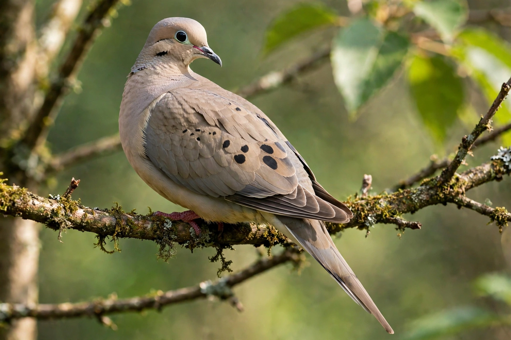

Mourning dove
| Mourning dove | |
|---|---|
| Scientific name | Zenaida macroura (Linnaeus, 1758) |
| Family | Columbidae (doves and pigeons) |
| Length | 22.5–36 cm (9–14 in) |
| Wingspan | 37–45 cm |
| Range | North America: Canada to Panama, Caribbean |
| Conservation | Least Concern (IUCN); population est. ~475 million |

The mourning dove (Zenaida macroura) is a member of the dove family Columbidae and one of the most abundant and widespread birds in North America, with a population estimated at around 475 million. It is a graceful, slender-tailed, small-headed dove, plump-bodied and mainly soft grey-brown above and pinkish below, named for the mournful cooing of the male. It is also known in parts of the Caribbean and older American usage as the "turtle dove" or "Carolina pigeon".
Description and behaviour
Mourning doves have black spots on the wings, a black bill, pinkish-red feet and a distinctive blue eye-ring; males show iridescent patches of pink and blue-green on the neck. Their wings make a characteristic whistling sound in flight. They are strong fliers — capable of speeds up to 55 mph (88 km/h) — and feed almost exclusively on seeds, foraging on the ground and storing food in the crop before digesting it while at rest. The male's call is a soft, drawn-out "cooOOoo-woo-woo-woo"; a perched bird also gives a three-part nest call.
Reproduction
Mourning doves are prolific, generally monogamous breeders. The male builds — with material gathered by the female — a flimsy stick nest in a tree, shrub or occasionally on the ground or a building ledge. The female lays two white eggs, which both parents incubate for about two weeks; the young ("squabs") are fed crop milk and fledge after roughly 15 days. Pairs in warm climates may raise up to six broods a year, compensating for heavy losses to predators and weather.
Relationship with humans
The mourning dove is one of North America's most important game birds, with more than 20 million shot annually in the United States, yet the population remains large. It is the leading game bird in numbers taken in many states and is also protected under the Migratory Bird Treaty Act. The species is closely related to the extinct passenger pigeon, whose loss it echoes in American conservation memory.